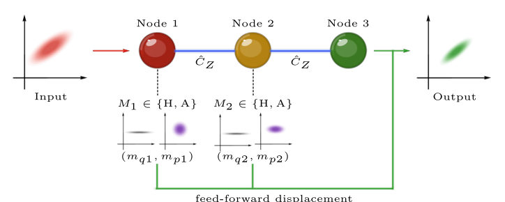
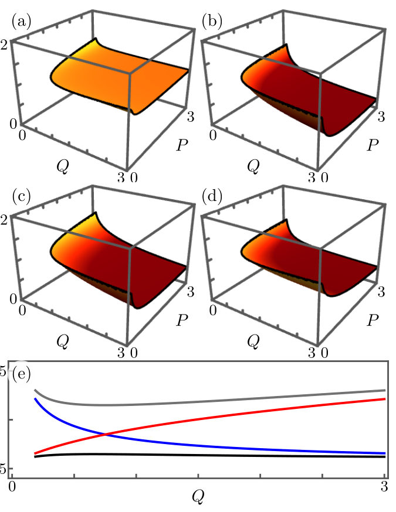

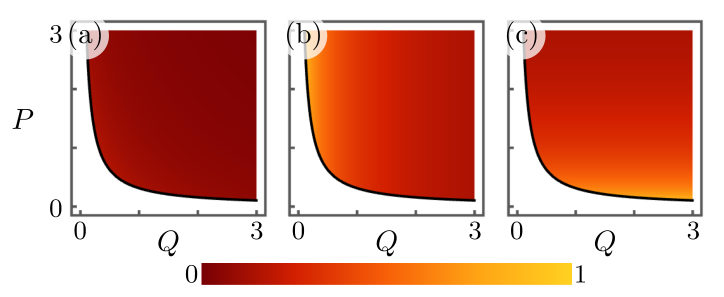
← Index · ← Previous · Next →
Authors: Li Pan, Xinlu Chen, Hong Zhang, Jian-Song Pan
Type: theory · Category: other · PDF: https://arxiv.org/pdf/2608.21768v1
Analysis basis: full PDF text, analyzed in chunks
Topic relevance: 🔥 Rydberg arrays 4/5 · 🔥 analog quantum simulation 4/5 · interference shaping light 1/5
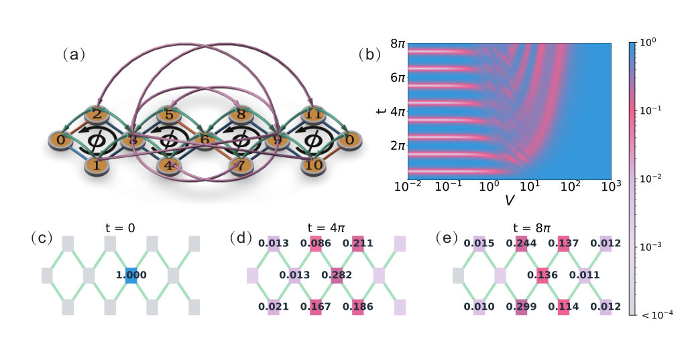
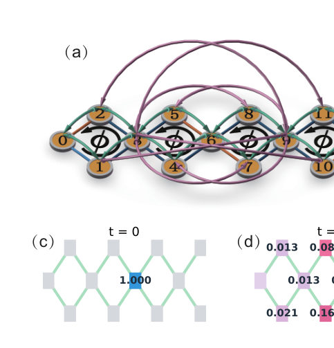
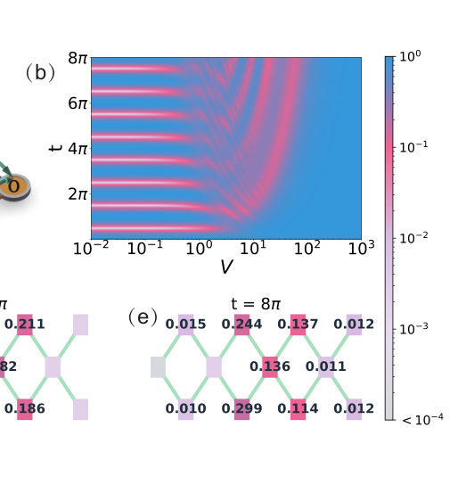
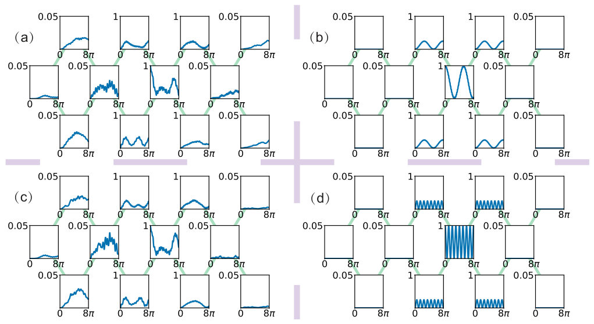
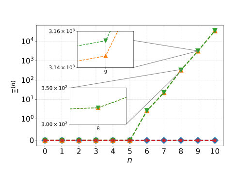
Summary. This paper analyzes the breakdown of the Aharonov-Bohm cage in Rydberg synthetic lattices by studying two-particle dynamics. Using the Evolution-Path Symmetry framework, the authors show that spatial inhomogeneity in nearest-neighbor exchange interactions is the critical ingredient required to break the cage. This mechanism links microscopic path interference directly to the emergence of delocalized, dispersive eigenstates, enabling transport.
Why it may be interesting. This work provides a deep, analytical understanding of how specific interaction symmetries (or lack thereof, due to inhomogeneity) dictate the transition between localized and delocalized quantum transport in engineered lattice systems, highly relevant to Rydberg physics.
Main problem. The paper investigates the microscopic mechanism by which interaction-induced exchange interactions cause the breakdown of the Aharonov-Bohm (AB) cage in quantum systems.
Main result. Inhomogeneous nearest-neighbor exchange interactions are necessary and sufficient to break the AB cage by disrupting path interference, leading to delocalized transport. Long-range interactions alone are insufficient to cause this breakdown.
Method. The analysis employs the Evolution-Path Symmetry (EPS) framework, analyzing two-particle dynamics through path interference in Fock space and comparing projections onto localized versus dispersive eigenstates.
Model / system. The system is modeled using Rydberg synthetic lattices, which realize flat-band physics and exhibit AB cage confinement. The dynamics are governed by a two-particle Hamiltonian incorporating nearest-neighbor and long-range exchange interactions.
Key observables. Population dynamics ($P_6$ vs. interaction strength $V$), spatial distribution of particles, and the coherence of the path interference factor ($\Xi(n)$).
Important parameters / regimes. The relative strengths and spatial variation (inhomogeneity) of nearest-neighbor and long-range exchange coupling constants.
Assumptions / limitations. The analysis focuses on the two-particle sector, and the initial state is assumed to possess exchange symmetry.
Figures summary. Figures illustrate the time evolution of particle population showing regimes of cage preservation, delocalized transport, and freeze-out, alongside spatial distributions confirming confinement or delocalization.
Paper structure. The paper progresses from defining the physical system and Hamiltonian to applying the EPS framework. It then systematically compares the effects of different interaction components (uniform NN, inhomogeneous NN, LR only, combined) on the path interference, linking this microscopic path behavior to macroscopic spectral reorganization and transport.
While the interaction-induced breakdown of Aharonov-Bohm (AB) cage is typically attributed to uniform bound-pair transport, systems with inhomogeneous exchange interactions realized with Rydberg synthetic lattices exhibit more complex dynamics. Employing the evolution-path symmetry (EPS) framework developed recently, we analyze the two-particle dynamics via path interference in Fock space. We find that a homogeneous nearest-neighbor exchange interaction cannot break the AB cage, regardless of whether the long-range exchange interaction is present or not. In contrast, we demonstrate that inhomogeneous nearest-neighbor exchange interaction breaks the destructive-interference EPS, and lifts the degeneracy of many-body compact localized states, thereby generating non-local dispersive eigenstates. Consequently, the initial state gains a non-zero overlap with these dispersive states, enabling delocalized transport. Furthermore, while long-range exchange interaction alone preserves the AB cage, its coupling with nearest-neighbor inhomogeneous exchange interaction opens non-canceling pathways that alter the diffusion profile. Our work connects microscopic path interference with macroscopic spectral reorganization, offering an analytical understanding of the mechanism underlying exchange-interaction-induced transport in Rydberg synthetic lattices.
Authors: Sayan Chatterjee, Nalinikanta Pradhan, Rina Kanamoto, M. Bhattacharya, Pankaj Kumar Mishra
Type: theory · Category: quantum gases · PDF: https://arxiv.org/pdf/2608.23560v1
Analysis basis: full PDF text, analyzed in chunks
Topic relevance: 🔥 analog quantum simulation 4/5 · methods for driven-dissipative 2/5 · Frenkel-Kontorova 1/5 · Keldysh / 2PI / non-Gaussian methods 1/5 · driven-dissipative phase transition 1/5
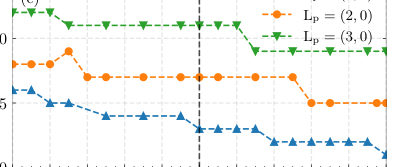
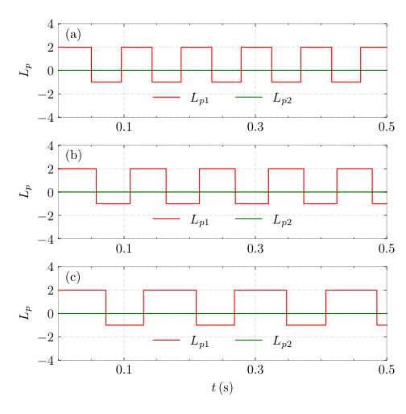
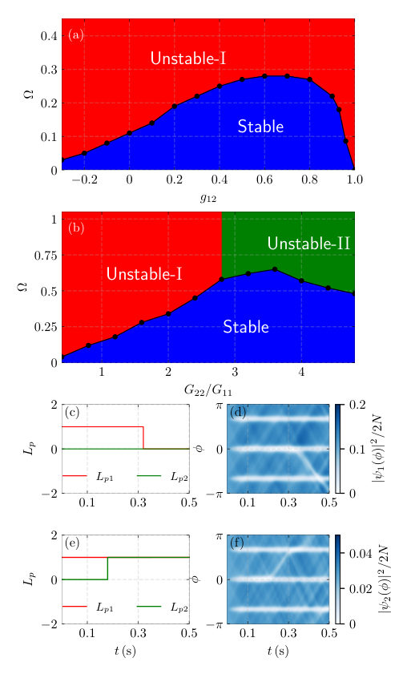
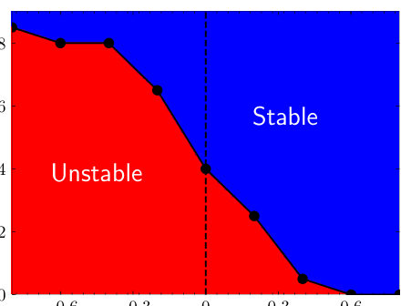
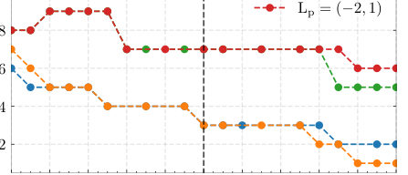
Summary. This paper theoretically investigates how persistent supercurrents in spinor Bose-Einstein condensates can be controlled using engineered Josephson junctions. By analyzing the role of interspecies interactions (g_12), the authors show that these interactions stabilize the supercurrent against decay, even in higher dimensions. This work offers a powerful toolset for designing next-generation atomtronic devices.
Why it may be interesting. This work provides a detailed theoretical roadmap for controlling macroscopic quantum phenomena (supercurrents) in engineered atomic systems, directly relevant to developing quantum simulators and novel quantum devices using ultracold atoms.
Main problem. The study investigates the stability and dynamics of persistent supercurrents in spinor atomic Bose-Einstein condensates confined to a ring structure with multiple Josephson junctions.
Main result. The presence of a second atomic species allows for unprecedented control over supercurrents, enabling mechanisms like phase-slip engineering and current-inversion switching.
Method. The research employs numerical simulations solving coupled Gross-Pitaevskii equations (GPE) in both 1D ring and 2D toroidal geometries.
Model / system. The system is a binary spinor BEC, modeled by coupled GPEs, simulating superflow in an 'atomtronic Josephson necklace' potential. The model incorporates intra- and inter-species interactions, Rabi coupling, and external barriers.
Key observables. Persistent current (winding number, L_p), current stability lifetime (τ_1), local superfluid velocity (v_local), and density profiles.
Important parameters / regimes. Interspecies interaction ratio (g_12), Rabi coupling strength (Omega), barrier height (V_0), and temperature (T).
Assumptions / limitations. The analysis compares zero-temperature GPE results with finite-temperature sGPE results, and extends the findings from 1D to 2D toroidal geometries.
Figures summary. Figures illustrate current decay versus stabilization as g_12 increases (Fig. 1, 2), show the dependence of stability on parameters in phase diagrams (Fig. 2c, Fig. 4), and demonstrate vortex nucleation vs. stable circulation in 2D (Fig. 6).
Paper structure. The paper systematically analyzes the system by first establishing the 1D model, demonstrating how increasing interspecies interaction (g_12) stabilizes the current against decay. It then extends this analysis to include finite temperature effects (sGPE) and finally generalizes the findings to a 2D toroidal geometry, confirming the robustness of the stabilization mechanism.
The investigation of superflow in multi-junction Josephson circuits is currently a leading frontier of physics research, probing the fundamental manifestations of macroscopic phase coherence and enabling applications to quantum simulation, metrology and computing. In this work, we extensively investigate the stability and dynamics of persistent currents of a spinor atomic Bose-Einstein condensate on a ring with multiple Josephson junctions. Specifically, we examine the effects of positive and negative interspecies interactions, co- and counter-rotation, population and Manakov asymmetry, as well as Rabi coupling on the persistent currents carried by the two components. Our analysis reveals that the presence of a second species offers multiple mechanisms for unprecedented manipulation of supercurrents on the ring, including phase-slip engineering, stability control, current-inversion switching and supercurrent pumping. Our study provides a roadmap for the engineering of persistent currents in binary ring condensates in necklace potentials, with significant implications for atomtronics, matter-wave interferometry and sensing using atomic Bose gases.
Authors: Tianyi Wang, Marko Cetina
Type: experiment · Category: other · PDF: https://arxiv.org/pdf/2608.23386v1
Analysis basis: full PDF text, analyzed in chunks
Topic relevance: 🔥 QC/QI experiment 4/5 · analog quantum simulation 1/5 · correlated / nonlocal dissipation 1/5 · driven-dissipative phase transition 1/5 · quantum measurements 1/5
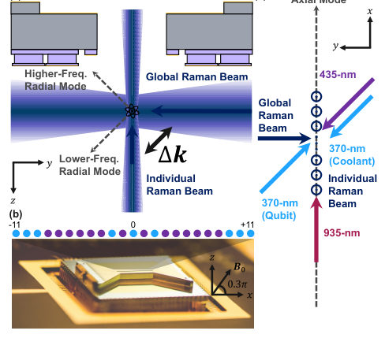
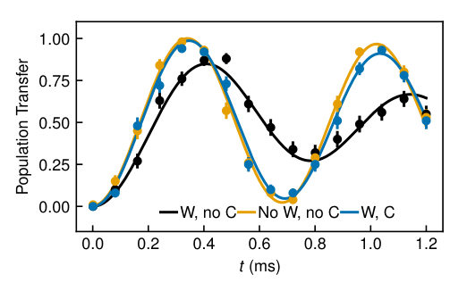
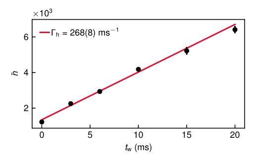
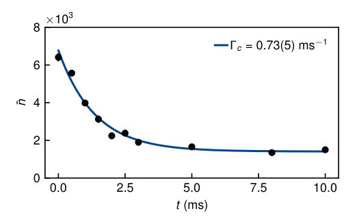
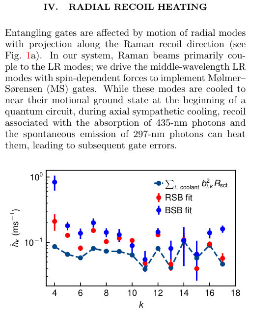
Summary. This paper reports on a novel sympathetic cooling technique applied to a long, dual-isotope ion chain. The technique effectively suppresses motional heating across all relevant vibrational modes during quantum operations. This achievement is a critical step toward building fault-tolerant, scalable quantum processors using trapped ions.
Why it may be interesting. This work provides a crucial experimental demonstration of noise mitigation (motional heating suppression) in a scalable, multi-qubit platform, directly addressing a major bottleneck for trapped-ion quantum computing.
Main problem. The primary challenge addressed is suppressing motional heating in long ion chains to enable deep quantum computations without causing qubit decoherence or degrading connectivity.
Main result. The authors successfully demonstrated steady-state mid-circuit sympathetic cooling of all relevant motional modes in a 23-ion chain, while preserving qubit coherence throughout the cooling sequence.
Method. The cooling is achieved sympathetically using a dual-isotope system, performed without direct qubit operations, and is tested over a realistic 56-ms quantum circuit duration.
Model / system. The system is a 23-ion chain composed of two different Yb isotopes (${}^{171} ext{Yb}^+$ qubits and ${}^{172} ext{Yb}^+$ coolant ions) trapped in a room-temperature linear RF ion trap.
Key observables. Mean phonon occupations of axial and radial modes, qubit coherence, and the decay rate of Rabi oscillations.
Important parameters / regimes. The experiment operates over a 56-ms circuit time with a 25% gate duty factor, and specific secular frequencies are mentioned.
Assumptions / limitations. The cooling scheme assumes the ability to perform initial state preparation via Doppler and Raman sideband cooling, and the analysis relies on fitting Rabi oscillations to model heating rates.
Figures summary. Figures illustrate the experimental setup (side, front, and top views of the 23-ion chain) and show diagnostics like population transfer probability vs. time and mean occupation number vs. idle time.
Paper structure. The paper details the experimental setup, characterizes the initial heating rates for both axial and radial modes, implements the sympathetic cooling protocol, and evaluates the preservation of qubit coherence and gate fidelity.
Owing to their high controllability and connectivity, one-dimensional ion chains are attractive building blocks for near-term quantum computers. However, long ion chains are susceptible to motional heating caused by fluctuating external electric fields. To enable deep computations, this source of noise must be suppressed without inducing qubit decoherence or degrading qubit connectivity. We demonstrate steady-state mid-circuit sympathetic cooling of all computationally-relevant motional modes of a 23-ion chain consisting of \qubit qubit and \coolant coolant ions without using any qubit operations. In a room-temperature system, our cooling scheme preserves the mean phonon occupations of the long-wavelength axial and radial modes near their values following state preparation, while keeping the modes used to implement entangling gates near their ground states throughout a 56-ms circuit. Crucially, we show that our cooling sequence preserves qubit coherence, and evaluate its impact on single- and two-qubit gate operations. Additionally, we demonstrate a parallel qubit reset protocol leveraging the shared radial mode coupling between species. Our sympathetic cooling scheme represents a critical step toward reducing gate errors in individually-addressed long ion chains and establishes a versatile platform for simulating open quantum systems.
Authors: Anand Aruna Kumar
Type: theory · Category: other · PDF: https://arxiv.org/pdf/2608.22199v1
Analysis basis: full PDF text, analyzed in chunks
Topic relevance: 🔥 Frenkel-Kontorova 4/5 · analog quantum simulation 2/5
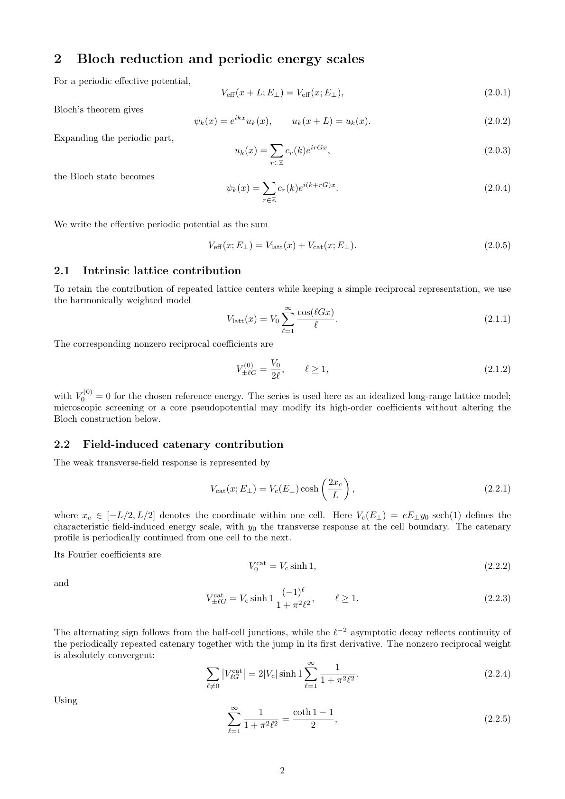
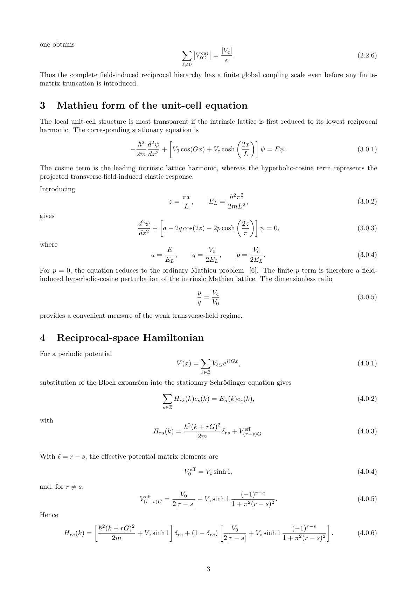
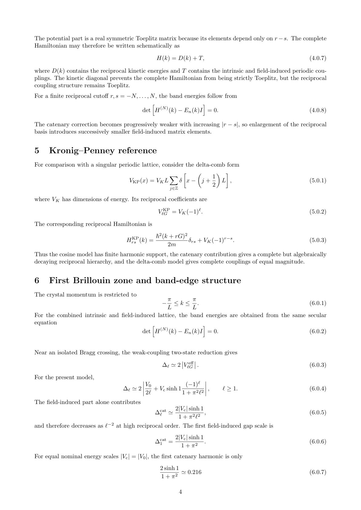
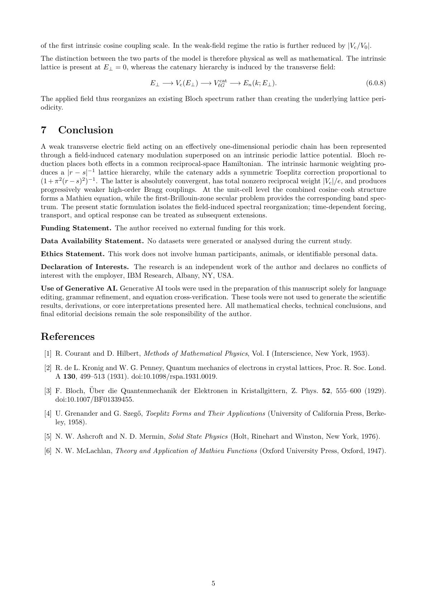
Summary. This theoretical study models an atomic chain subjected to a weak transverse electric field, analyzing how this field modifies the electronic band structure using Bloch theory. By combining the intrinsic lattice potential with a catenary-shaped field potential, the problem reduces to solving a Mathieu equation. The results show that the field induces measurable changes in the band gaps, providing insight into field-induced spectral reorganization in low-dimensional solids.
Why it may be interesting. This work provides a concrete, solvable model demonstrating how external fields can tune the band structure of low-dimensional periodic systems, which is relevant for understanding field effects in quantum materials and optical lattices.
Main problem. The paper investigates how a weak, static electric field applied transversely to an effectively one-dimensional periodic atomic chain reorganizes its electronic Bloch spectrum.
Main result. The transverse field modifies the Bloch spectrum by introducing field-dependent band energies and corresponding Bragg gaps, which is governed by a Mathieu equation.
Method. The analysis uses Bloch reduction in reciprocal space, treating the total potential as a sum of an intrinsic lattice potential and a field-induced catenary potential.
Model / system. The system is an infinite 1D atomic chain with a periodic potential ($V_{ ext{latt}}$) subjected to a weak transverse field, modeled by a catenary potential ($V_{ ext{cat}}$). The resulting Hamiltonian is analyzed via Bloch theory.
Key observables. Field-dependent band energies and the hierarchy of Bragg gaps.
Important parameters / regimes. The field strength ($E_\perp$), which dictates the magnitude of the catenary potential ($V_c$), and the lattice periodicity ($G$).
Assumptions / limitations. The field is weak, allowing for approximations, and the transverse displacement is assumed negligible, projecting the response onto the chain axis.
Paper structure. The paper establishes the effective Hamiltonian by combining the intrinsic lattice potential (yielding a $|r-s|^{-1}$ hierarchy) and the catenary contribution (yielding a $|r-s|^{-2}$ correction). It then solves the resulting secular equation, leading to a Mathieu equation, to determine the field-dependent band structure.
We consider an effectively one-dimensional periodic atomic chain subjected to a weak static electric field transverse to the chain axis. The intrinsic lattice is represented in reciprocal space by a harmonically weighted periodic pseudopotential, while the transverse field produces a weak elastic and polarizable response whose minimum-energy distribution is approximated by a periodically repeated catenary profile. Bloch reduction places both contributions in a common reciprocal-space Hamiltonian. The intrinsic lattice produces a \ (|r-s|^ {-1} ) hierarchy, whereas the catenary contribution is a symmetric Toeplitz correction with coefficients proportional to \((1+π^2(r-2) ^ {-1} \) and therefore asymptotically to \ (|r-s|^ {-2} ). The complete nonzero reciprocal weight of the catenary contribution is absolutely convergent and sums to \ (|V_ {\rm c} |/e ). At the unit-cell level, the lowest intrinsic harmonic together with the catenary term gives a Mathieu equation containing both cosine and hyperbolic-cosine modulations. A first-Brillouin-zone reduction then yields the field-dependent band energies and the corresponding hierarchy of Bragg gaps. The model isolates a simple mechanism by which a transverse electric field can reorganize the Bloch spectrum of a low-dimensional periodic system. Keywords: Bloch theory; transverse electric field; catenary potential; Mathieu equation; Brillouin zone; band structure.
Authors: B. M. Rodríguez-Lara, J. A. Mendoza-Fierro
Type: theory · Category: quantum information and computing · PDF: https://arxiv.org/pdf/2608.22043v1
Analysis basis: full PDF text, analyzed in chunks
Topic relevance: 🔥 quantum measurements 4/5 · Keldysh / 2PI / non-Gaussian methods 1/5 · methods for driven-dissipative 1/5



Summary. This theoretical paper analyzes how different measurement readouts (Arthurs-Kelly vs. homodyne) affect Gaussian filtering in a continuous-variable cluster wire. It shows that finite AK measurements implement a conditional filter whose output properties depend on the input state, distinguishing it from simple additive noise channels. This provides a rigorous tool for understanding measurement-level control in quantum information processing.
Why it may be interesting. This work provides a detailed, quantitative understanding of how measurement choices (readout patterns) fundamentally alter the quantum information processing capabilities of continuous-variable quantum systems, which is crucial for quantum networking and measurement-based quantum computation.
Main problem. The paper characterizes the Gaussian filtering implemented by a continuous-variable cluster wire when using Arthurs-Kelly (AK) readout, contrasting it with standard homodyne readout.
Main result. Finite AK readout generates a pattern-resolved, conditional Gaussian filter whose gain and residual covariance depend on the input state, unlike the input-independent additive channel from homodyne measurements.
Method. The analysis uses the covariance-matrix formalism and the Schur complement to derive the conditional output covariance for various readout patterns (HH, AH, HA, AA).
Model / system. The system is a three-node line graph representing a continuous-variable cluster wire, analyzed using Gaussian state descriptions and controlled-phase network calculations.
Key observables. Output-to-input symplectic-area ratio ($\eta_R$) and the gain determinant ($ au_R$).
Important parameters / regimes. Readout patterns (HH, AH, HA, AA); finite readout variances ($ u_q, u_p$); input covariance entries ($Q, P, C$).
Assumptions / limitations. The analysis assumes calibrated, uncorrelated AK readout and focuses on the reduced finite-nullifier description for finitely squeezed wires.
Figures summary. Figure 2 shows $\eta_R$ for the four patterns over the physical input-covariance region, while Figure 3 shows the gain determinant $ au_R$ for the three finite-AK patterns, demonstrating area contraction.
Paper structure. The paper establishes the mathematical framework for the readout patterns, derives the conditional Gaussian filtering rules via the Schur complement, and then compares the resulting filtering properties ($\eta_R$ and $ au_R$) of the finite-AK patterns against the homodyne reference.
Measurement readout programs the Gaussian operation implemented by a continuous-variable cluster wire. For the standard three-node wire, momentum homodyne readout gives an additive parity channel with finite-squeezing noise. We classify the pattern-resolved input--output covariance transformations generated by calibrated uncorrelated Arthurs--Kelly readout on one or both consumed nodes. Any finite Arthurs--Kelly position record produces a conditional Gaussian filter whose gain and residual covariance depend on the input covariance entries, rather than an input-independent additive Gaussian channel. Writing $\mathrm{A}$ for Arthurs--Kelly readout and $\mathrm{H}$ for homodyne readout, the readout pattern selects the filtered sector, with $\mathrm{AH}$ selecting position, $\mathrm{HA}$ selecting momentum, and $\mathrm{AA}$ retaining both. The hierarchy $0 < τ_{\mathrm{AA}} < \min \left\{ τ_{\mathrm{AH}}, τ_{\mathrm{HA}} \right\} < 1 = τ_{\mathrm{HH}}$ shows that finite Arthurs--Kelly position records contract the gain-transferred covariance area. Our results identify calibrated uncorrelated Arthurs--Kelly readout as a measurement-level method for covariance-sensitive Gaussian filtering inside a fixed cluster graph.
Authors: Rafael Abreu
Type: theory · Category: other · PDF: https://arxiv.org/pdf/2608.23191v1
Analysis basis: full PDF text, analyzed in chunks
Topic relevance: 🔥 quantum measurements 4/5 · Keldysh / 2PI / non-Gaussian methods 2/5
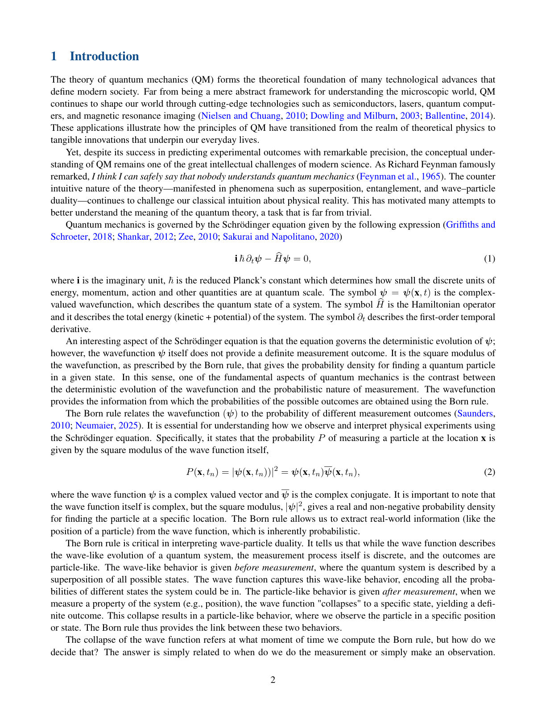
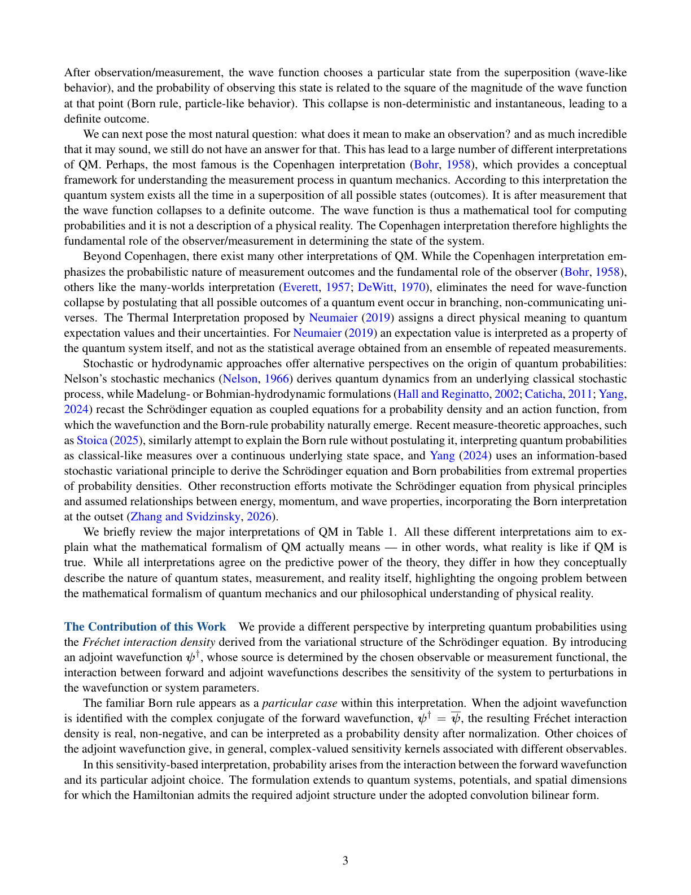
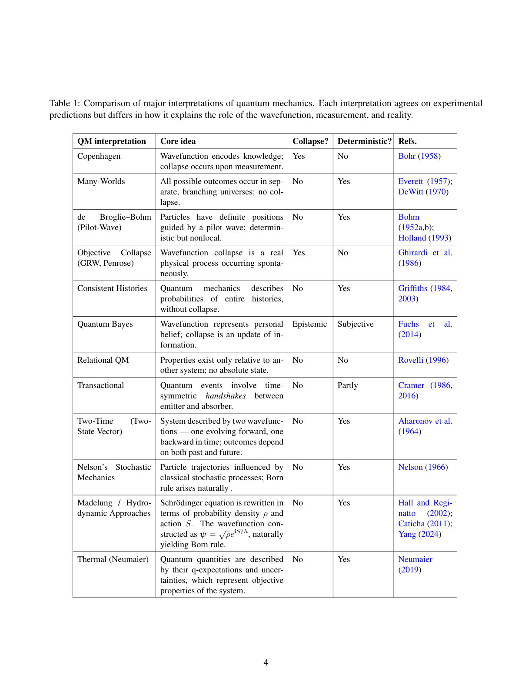
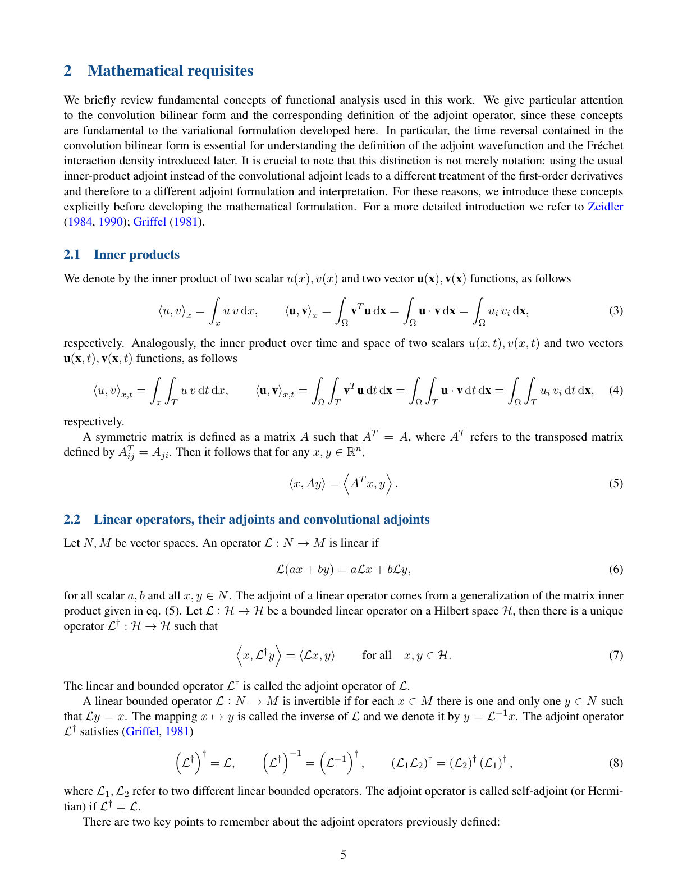
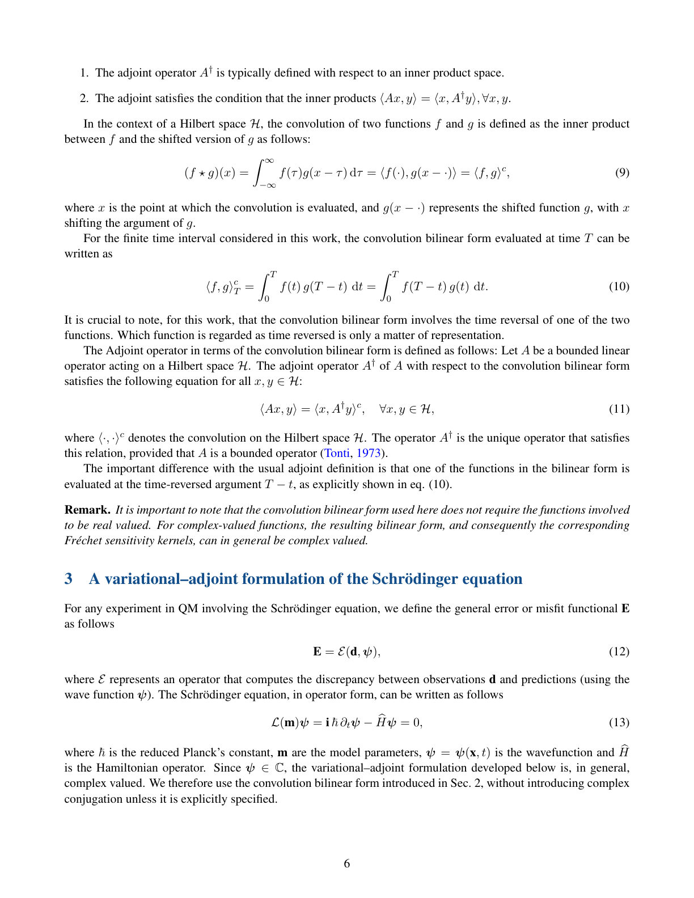
Summary. This paper proposes a variational-adjoint interpretation of quantum mechanics where the interaction between forward and adjoint wavefunctions defines a general 'Fréchet sensitivity kernel.' It demonstrates that the standard Born probability rule emerges as a specific, positive-definite instance within this broader class of sensitivity measures. This offers a mathematically rigorous framework connecting quantum observables to sensitivity analysis, with implications for quantum control.
Why it may be interesting. This work provides a novel mathematical lens—sensitivity analysis—to re-examine the measurement problem in QM, potentially unifying different interpretations under a single mathematical structure.
Main problem. The paper addresses the conceptual meaning of quantum mechanics by providing a variational-adjoint interpretation to reconcile the deterministic evolution of the wavefunction with the probabilistic nature of measurement outcomes.
Main result. It shows that the familiar Born probability density is a special, positive-definite case of a general 'Fréchet interaction density' derived from the interaction between forward and adjoint wavefunctions.
Method. The core method is the variational-adjoint formulation applied to the Schrödinger equation, utilizing concepts from functional analysis and sensitivity analysis.
Model / system. The system is general quantum mechanics, governed by the Schrödinger equation. The mathematical framework involves defining an adjoint wavefunction ($\psi^\dagger$) associated with a chosen observable or measurement functional.
Key observables. Fréchet interaction density, Born probability density, momentum, energy, and spin sensitivity kernels.
Important parameters / regimes. The Hamiltonian ($H$), time ($t$), and the choice of observable defining the adjoint wavefunction.
Assumptions / limitations. The interpretation assumes the validity of a variational structure that allows the definition of an adjoint field ($\psi^\dagger$) to quantify measurement sensitivity.
Figures summary. No specific figures were described, but the notes mention a comparison table (Table 1) summarizing major interpretations of QM.
Paper structure. The paper develops the variational-adjoint formalism, derives the general Fréchet sensitivity kernels, demonstrates that the Born rule is a special case, and discusses connections to time-symmetric QM and quantum control.
We present a variational--adjoint interpretation of quantum mechanics in which the interaction between forward and adjoint wavefunctions defines a general sensitivity kernel of the system. This Fréchet interaction density quantifies how perturbations in the wavefunction (or system parameters) influence a chosen observable. The familiar Born probability density appears as a special case when the adjoint wavefunction is chosen as the complex conjugate of the forward wavefunction, for which the interaction density becomes real and non-negative. Within this framework, probability is a particular positive-definite form of sensitivity described by the Fréchet interaction density. In general, the variational--adjoint interpretation also produces Fréchet sensitivity kernels associated with other quantum observables, including momentum, energy, and spin. This suggests that the Born probability density belongs to a broader class of Fréchet sensitivity kernels associated with quantum observables. The proposed interpretation also provides a connection with time-symmetric interpretations of quantum mechanics and possible future applications in quantum control and quantum metrology.
Authors: Nitay Mayo, Tal Mor, Aryeh Lev Zabokritskiy
Type: experiment · Category: quantum information and computing · PDF: https://arxiv.org/pdf/2608.21904v1
Analysis basis: full PDF text, analyzed in chunks
Topic relevance: 🔥 QC/QI experiment 4/5 · quantum measurements 1/5
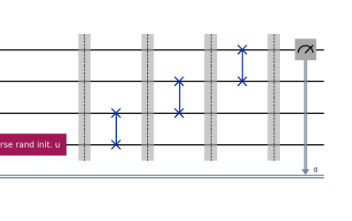
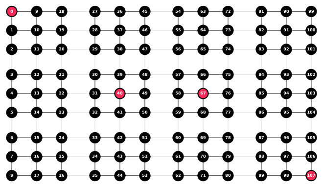
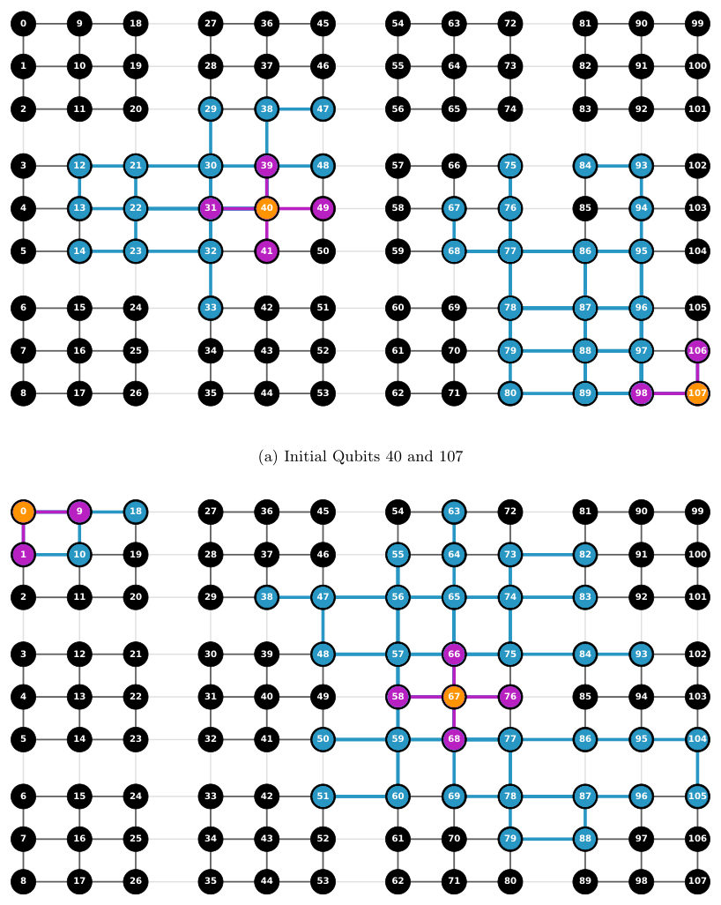
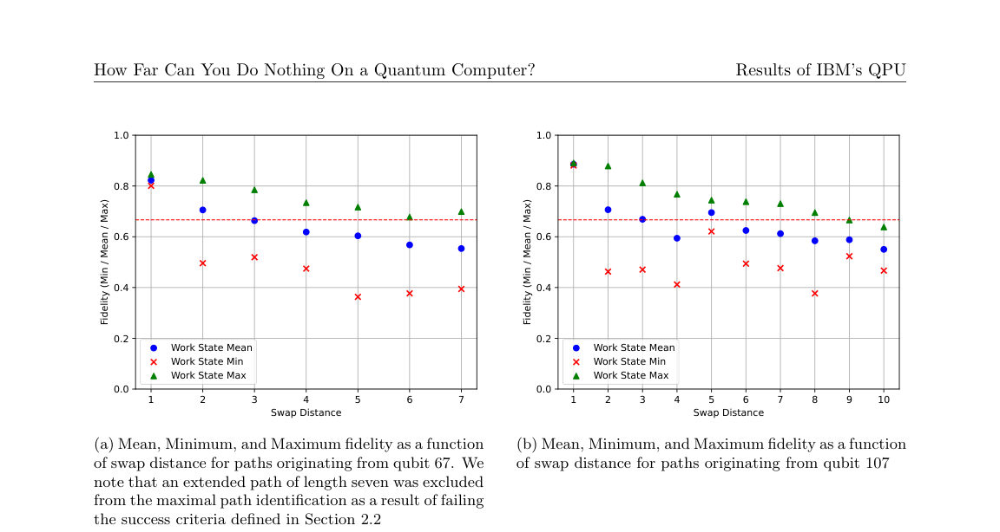
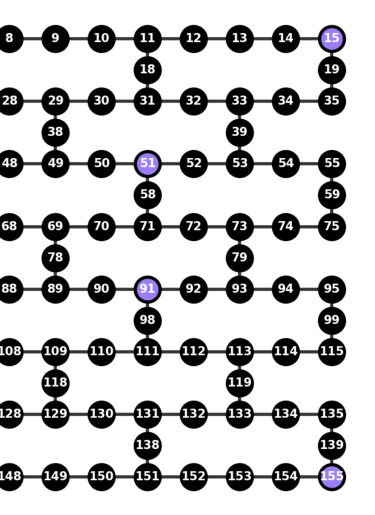
Summary. This work uses the deceptively simple 'do-nothing' state-transfer task to rigorously probe the physical connectivity and noise profile of quantum computers. By measuring both uniform reliability and best-case path lengths, the authors distinguish between how robust a processor is everywhere versus how far it can achieve a perfect path. This provides critical, hardware-specific metrics for assessing quantum hardware quality.
Why it may be interesting. It provides an empirical, hardware-specific diagnostic tool to quantify the spatial noise landscape of quantum processors, which is crucial for designing fault-tolerant quantum circuits that require long-range state transfer.
Main problem. The paper assesses the spatial limitations of quantum processors by determining how far a quantum state can be reliably transferred across physical qubits using a minimal 'do-nothing' protocol.
Main result. The study reveals a sharp distinction between uniform spatial reliability (isotropic radius) and best-case performance (longest successful route), with different quantum processors exhibiting vastly different noise profiles.
Method. A route-resolved comparative assessment is performed using the 'do-nothing' state-transfer protocol, which involves routing a prepared quantum state across physical qubits via SWAP gates and measuring final state fidelity.
Model / system. The experiments are conducted on commercial Quantum Processing Units (QPUs), specifically Rigetti’s Cepheus-1-108Q and IBM Heron-r2 processors, treating the physical qubit connectivity as the system under test.
Key observables. State fidelity, isotropic radius (uniform reliability), and maximum successful swap distance (best-route performance).
Important parameters / regimes. The success criterion is defined by maintaining a fidelity above the classical limit (e.g., F > 2/3).
Assumptions / limitations. The reported quantities are empirical and conditional on the specific route families, finite-shot decision rules, and execution time, not universal constants.
Figures summary. Figures illustrate the do-nothing protocol implementation and map the connectivity and successful routing areas on the QPU architectures.
Paper structure. The paper introduces the 'do-nothing' protocol as a spatial probe, details the methodology for calculating isotropic radius and maximal path length, and presents comparative results for different QPU hardware platforms.
We present a route-resolved comparative assessment of Rigetti's Cepheus-1-108Q and IBM Heron-r2 processors using the established 'do-nothing' state-transfer protocol. Rather than proposing a new protocol, we use this deterministic, low-complexity task as a high-resolution spatial probe. For each evaluated initial qubit, we report two complementary quantities: the largest tested radius within which every evaluated shortest route satisfies the operational success rule, and the longest successful route identified within the evaluated route family. To achieve this, we address a deceptively simple yet foundational question: ``How far can you do-nothing on a quantum computer?'' Operationally, this do-nothing protocol serves as a fundamental state transfer protocol: we prepare an initial quantum state, route it across the physical qubits using SWAP gates, and measure the final state fidelity against the well-established classical fidelity limit for single-qubit state transfer. While this trivial state-transfer protocol serves as the most intuitive baseline, actively preserving a quantum state across a physical lattice proves to be a non-trivial task that exposes the information to cumulative relaxation, dephasing, and environmental cross-talk. In the highlighted IBM QPU case, we identify an isotropic radius of 10 and a successful path of swap distance 27, whereas the highlighted Rigetti Cepheus case exhibits an isotropic radius of 1 but selected above-threshold routes reaching swap distance 8. These results reveal a sharp distinction between uniform spatial reliability and best-route performance. The presented quantities are empirical and conditional on the evaluated route families, finite-shot decision rule, calibration state, and execution time; they are not architecture-wide constants.
Authors: Jakob Dolgner, Dirk Manske, James K. Freericks, Mohsen Yarmohammadi
Type: theory · Category: strongly correlated electrons · PDF: https://arxiv.org/pdf/2608.22517v1
Analysis basis: full PDF text, analyzed in chunks
Topic relevance: correlated / nonlocal dissipation 3/5 · driven-dissipative phase transition 3/5 · interference shaping light 3/5 · methods for driven-dissipative 3/5 · non-equilibrium universality 3/5 · quantum measurements 3/5 · Keldysh / 2PI / non-Gaussian methods 2/5 · analog quantum simulation 2/5 · scars & prethermalization 2/5 · Frenkel-Kontorova 1/5
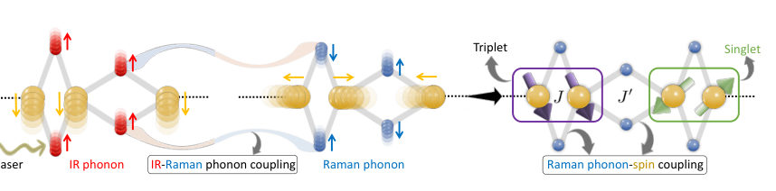
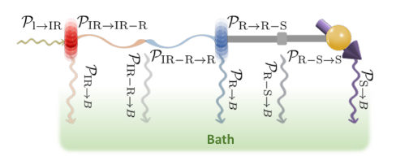
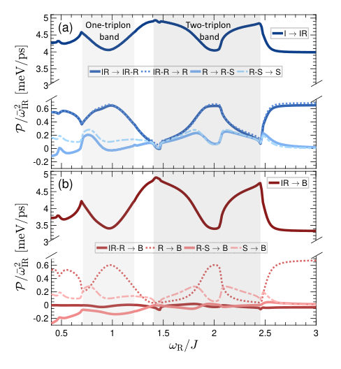
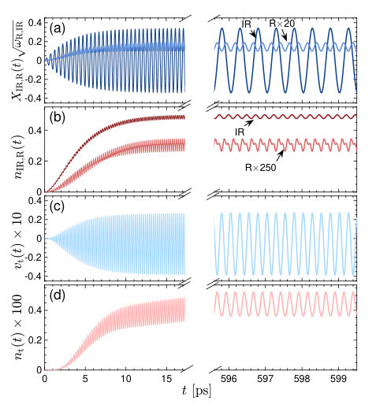
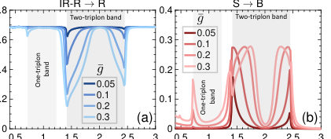
Summary. This theoretical study analyzes how energy flows anomalously in spin-Peierls chains by coupling lattice vibrations (phonons) to magnetic excitations. By comparing continuous versus pulsed laser driving, the authors show that the energy transfer mechanism is dictated by dynamic impedance matching, not just the material's inherent energy spectrum. This establishes crucial limits for controlling magnetic states using light fields without destroying the underlying quantum coherence.
Why it may be interesting. The work provides a detailed, non-equilibrium quantum description of energy coupling in magnetic insulators, which is highly relevant for understanding quantum control in strongly correlated materials using light fields.
Main problem. The paper investigates anomalous energy flows and energy cascades in spin-Peierls chains, specifically focusing on how nonlinear phononics mediate energy transfer between the lattice and magnetic sectors.
Main result. Energy transfer is governed by a dynamical impedance-matching condition rather than the unperturbed density of states. Furthermore, pulsed driving preserves quantum interference features, while continuous driving leads to back-action and feature smearing.
Method. The analysis employs the bond-operator formalism combined with a second-order cumulant expansion of the Lindblad master equation to model non-equilibrium dynamics.
Model / system. The system is a strongly dimerized spin-Peierls chain, modeled with coupled phonon modes (IR and Raman) and a spin Hamiltonian described by bond operators. The total dynamics are governed by a complex Hamiltonian incorporating nonlinear phononic coupling.
Key observables. Energy transfer rates ($P_{l o IR}$, $P_{IR o S}$), phonon damping/power broadening, and sharp Fano-like quantum interference features.
Important parameters / regimes. The comparison between Continuous-Wave (CW) vs. pulsed THz driving regimes, and the condition for impedance matching.
Assumptions / limitations. Key approximations include the strong-dimerization limit ($J \gg J'$) and treating optical phonons as dispersionless Einstein modes.
Figures summary. Figure 1 schematically illustrates the multi-stage energy transfer process: THz laser $ o$ IR phonon $ o$ Raman phonon $ o$ Magnetic modulation $ o$ Triplet generation.
Paper structure. The paper builds the model by defining the coupled Hamiltonian, deriving the equations of motion via the Lindblad master equation, calculating sequential energy flow rates using commutators, and finally contrasting the dynamics under CW versus pulsed driving.
We investigate the nonequilibrium spin-phonon dynamics and energy cascades in a strongly dimerized spin-Peierls chain using a multi-tiered nonlinear phononics architecture. To bypass linear selection rules prohibiting the direct excitation of the Raman-active dimerization mode, a terahertz laser drives an infrared mode that nonlinearly couples to the Raman lattice displacement, subsequently modulating the magnetic exchange. Employing a bond-operator formalism with a second-order cumulant expansion of the Lindblad master equation, we show that maximum energy transfer into the magnetic sector is governed by a dynamical impedance-matching condition rather than the unperturbed triplon density of states. We find that the sustained energy input of continuous-wave driving builds high excitation densities that severely back-act on the lattice, overdamping the primary phonon and smearing magnetic features via power broadening. Conversely, the small time-integrated energy of a pulse keeps the response perturbative, terminating before back-action accumulates and preserving sharp Fano-like quantum interferences. These insights establish limits for controlling dynamic magnetic states without quenching the driving lattice modes.
Authors: Valentin Boettcher, Félix Pellerin, Philippe St-Jean, William A. Coish
Type: both · Category: other · PDF: https://arxiv.org/pdf/2608.21569v1
Analysis basis: full PDF text, analyzed in chunks
Topic relevance: analog quantum simulation 3/5 · correlated / nonlocal dissipation 3/5 · driven-dissipative phase transition 3/5 · methods for driven-dissipative 3/5 · quantum optics experiment 3/5 · Keldysh / 2PI / non-Gaussian methods 2/5 · non-equilibrium universality 2/5 · Tavis-Cummings & cavity-many-emitter 1/5 · interference shaping light 1/5 · quantum measurements 1/5
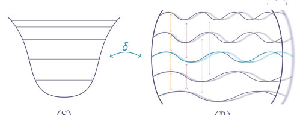
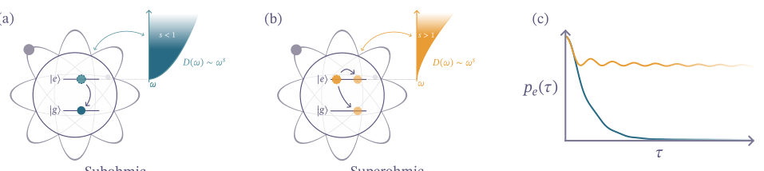
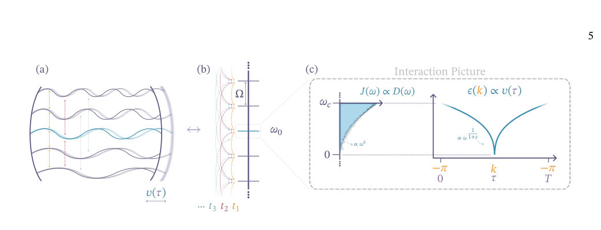
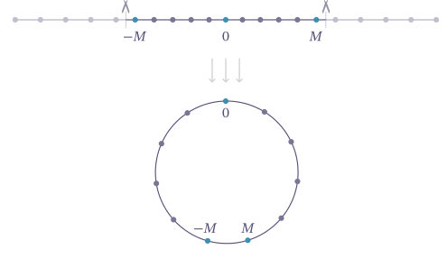
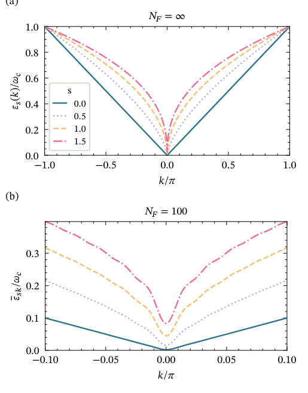
Summary. This paper presents a method to engineer complex, non-Markovian quantum baths using the controlled modulation of a parametric optical cavity. By tuning the modulation waveform, the bath spectral density can be continuously controlled, allowing for the accurate simulation of phenomena like the spin-boson localization transition. This offers a modular platform for fundamental studies in open quantum systems.
Why it may be interesting. This work provides an experimentally accessible, highly tunable platform for engineering structured quantum environments, which is crucial for advancing quantum thermodynamics and open quantum system research.
Main problem. The paper addresses the challenge of accurately simulating non-Markovian quantum system-bath dynamics, which standard Markovian approximations fail to capture.
Main result. They demonstrate a novel, highly tunable platform using parametrically driven cavities to emulate arbitrary non-Markovian bath spectral densities, specifically realizing the localization transition of the spin-boson model.
Method. The method involves engineering the bath spectral density $J(\omega)$ by controlling the real-time modulation waveform of a cavity, which is modeled as a synthetic long-range hopping system.
Model / system. The physical system is a quantum system coupled to a bath realized by the discrete electromagnetic modes of a parametrically driven optical cavity (fiber-loop). The underlying model is the spin-boson model, whose bath coupling is engineered via the cavity's modulation.
Key observables. The decay probability $p_e( au)$ of a two-level system, and the bath correlation function $c( au)$.
Important parameters / regimes. The spectral exponent $s$ governing the bath spectral density $J(\omega) \propto \omega^s$, which can be tuned continuously from sub-ohmic ($s<1$) to super-ohmic ($s>1$).
Assumptions / limitations. The exact realization requires the thermodynamic limit (infinite bath modes) and assumes the validity of approximations related to the nonstationary phase evolution.
Figures summary. Figure 1 illustrates the setup (System coupled to a modulated cavity bath), and Figure 2 shows the decay probability $p_e( au)$ for different spectral regimes ($s<1$ vs $s>1$).
Paper structure. The paper introduces the scheme, details the Hamiltonian and the mechanism for tuning $J(\omega)$ via the cavity's synthetic dimension, demonstrates the emulation of the spin-boson localization transition, and concludes with theoretical bounds on systematic errors.
We introduce and characterize a scheme for emulating non-Markovian quantum system-bath dynamics using the discrete electromagnetic field modes of a parametrically driven cavity. In this scheme, the character of a bosonic bath (the form of the bath spectral density) is tied directly to the shape of the real-time waveform describing periodic parametric cavity modulation. As an explicit example, we demonstrate the feasibility of this scheme for a fiber-loop experiment with currently achievable parameters, supported by numerical simulations and analytical estimates. In particular, we show that a localization transition of the spin-boson model can be accurately emulated in this fiber-loop cavity system. This localization effect is characterized by a sharp transition from partial decay to complete decay for a two-level system coupled to a bosonic bath as the bath spectral density $J(ω)\propto ω^{s}$ is continously tuned from the sub-ohmic ($s<1$) to the super-ohmic ($s>1$) regime. The transition is only exactly realized in the thermodynamic limit (for an infinite number of bath modes) and for sufficiently weak system-bath coupling. We highlight a competition between the weak-coupling and thermodynamic limits in this problem and show that challenges in approximately realizing the transition can nevertheless be overcome. Finally, we provide bounds on the systematic error introduced when emulating non-Markovian dynamics for arbitrary system observables. The scheme presented here can enable the realization of a modular platform for engineering custom non-Markovian baths, with potential applications in quantum thermodynamics, thermalization of many-body systems, and resource-efficient quantum simulations of open quantum systems.
Authors: Pietro Pacchioni, Filippo Ferrari, Vincenzo Savona, Matteo Seclì
Type: theory · Category: other · PDF: https://arxiv.org/pdf/2608.23557v1
Analysis basis: full PDF text, analyzed in chunks
Topic relevance: Tavis-Cummings & cavity-many-emitter 3/5 · analog quantum simulation 3/5 · driven-dissipative phase transition 3/5 · methods for driven-dissipative 3/5 · correlated / nonlocal dissipation 2/5 · non-equilibrium universality 2/5 · scars & prethermalization 2/5 · Keldysh / 2PI / non-Gaussian methods 1/5 · quantum measurements 1/5 · quantum optics experiment 1/5
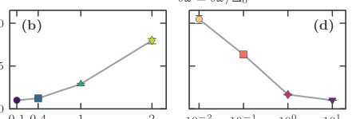
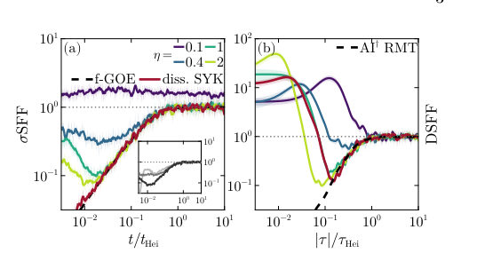
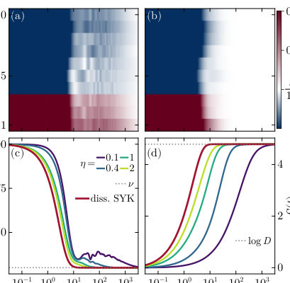
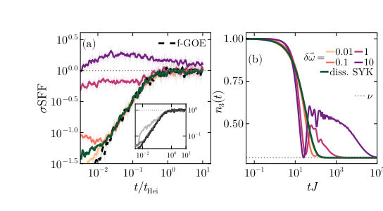
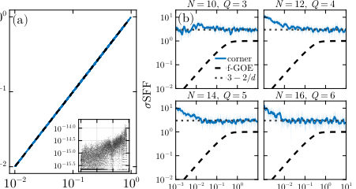
Summary. This paper demonstrates that cavity QED devices can realize dissipative Sachdev-Ye-Kitaev physics, a key model for quantum chaos. By analyzing both single-mode spontaneous emission and multi-mode cavity leakage, the authors show that dissipation drives the system into a universal non-Hermitian random matrix universality class. This offers a powerful experimental route to study the emergence of quantum chaos in open quantum systems.
Why it may be interesting. This work provides a concrete, controllable platform (cQED) to study fundamental concepts of quantum chaos and thermalization in open systems, bridging theoretical models like SYK with experimental quantum optics setups.
Main problem. The paper investigates how dissipation can induce Sachdev-Ye-Kitaev (SYK) physics, a model for quantum chaos, in open many-body systems.
Main result. Both single-mode and multi-mode cavity loss mechanisms successfully realize universal open SYK physics, demonstrating that dissipation can generate quantum chaos even when starting from integrable Hamiltonians.
Method. The analysis relies on calculating spectral form factors (SFFs) and singular spectral form factors ($\sigma$SFFs) derived from the Liouvillian master equation to diagnose the transition to quantum chaos.
Model / system. The system is based on Cavity Quantum Electrodynamics (cQED) using ultracold fermionic atoms interacting with a cavity. The dynamics are governed by a Lindblad master equation incorporating cavity losses and atomic spontaneous emission.
Key observables. Dissipative Spectral Form Factors (DSFF), Singular Spectral Form Factors ($\sigma$SFF), and the crossover dynamics observed in single-atom-resolved densities ($n_j(t)$).
Important parameters / regimes. Lamb-Dicke parameter ($\eta$) for spontaneous emission, and the cavity-mode spacing parameter ($\delta ilde{\omega}$) for multi-mode loss.
Assumptions / limitations. The analysis often requires unfolding the spectrum to compare results with universal Random Matrix Theory (RMT) predictions, and approximations like adiabatic elimination are used in the multi-mode case.
Figures summary. Figures illustrate the $\sigma$SFF and DSFF for both single-mode and multi-mode loss routes, showing convergence to RMT predictions, alongside plots of atomic density relaxation ($n_j(t)$) demonstrating the prethermal-to-thermalization crossover.
Paper structure. The paper develops the theory by first establishing the effective Hamiltonian and the master equation for both single-mode and multi-mode cQED. It then applies advanced RMT diagnostics ($\sigma$SFF, DSFF) to show the universal emergence of SYK physics, linking the control parameters ($\eta, \delta ilde{\omega}$) to the degree of induced chaos.
We show that cavity quantum electrodynamics (QED) devices can realize dissipative Sachdev-Ye-Kitaev (SYK) physics, a paradigmatic setting for quantum chaos in open many-body systems. Ultracold fermions with disordered, all-to-all cavity-mediated interactions provide two complementary routes: atomic spontaneous emission in a single-mode cavity and photon leakage from a multimode cavity. Strikingly, both converge to the same non-Hermitian random-matrix universality despite originating from integrable and chaotic closed-system limits, respectively. In the single-mode case, dissipation therefore creates quantum chaos from an integrable Hamiltonian. We trace this convergence to a tunable growth in dissipative rank, controlled, respectively, by the Lamb-Dicke parameter and the cavity-mode spacing. The resulting chaos leaves a dynamical fingerprint: a crossover from long-lived prethermal memory to rapid thermalization, visible in single-atom-resolved densities.
Authors: Gombojav O Ariunbold, Vaidyanathan Sivaraman
Type: theory · Category: other · PDF: https://arxiv.org/pdf/2608.22664v1
Analysis basis: full PDF text, analyzed in chunks
Topic relevance: Dicke superradiance 3/5 · correlated / nonlocal dissipation 3/5 · methods for driven-dissipative 3/5 · driven-dissipative phase transition 2/5 · free-space correlated emission 2/5 · non-equilibrium universality 2/5 · quantum measurements 2/5 · Keldysh / 2PI / non-Gaussian methods 1/5 · superradiant laser 1/5
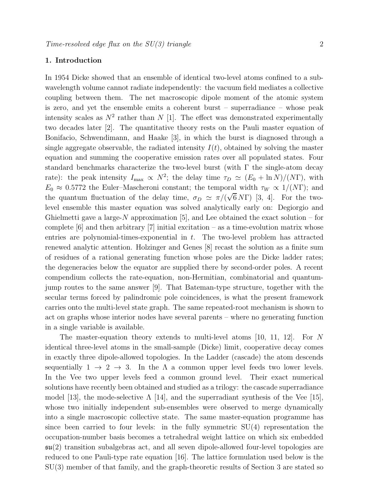
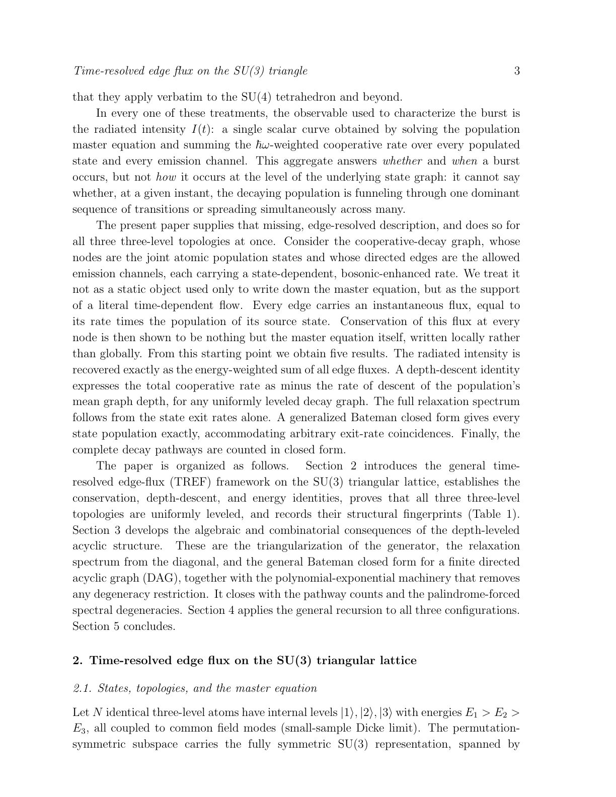
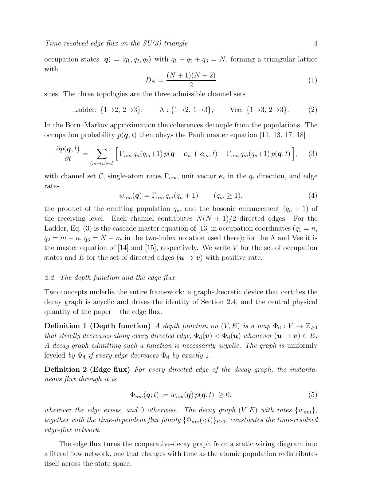
Summary. This paper introduces a Time-Resolved Edge Flux (TREF) framework to analyze cooperative decay in quantum systems, moving beyond simple intensity measurements. By mapping the master equation onto a time-dependent flux network on an SU(3) graph, the authors derive exact identities relating total decay rates to graph depth descent. They provide a general, robust Bateman solution applicable to any finite DAG, even when decay rates coincide.
Why it may be interesting. This work provides a powerful, rigorous mathematical formalism for analyzing open quantum systems dynamics, offering an edge-resolved view of decay processes that is highly relevant to quantum optics and superradiance.
Main problem. To develop an edge-resolved description of cooperative emission dynamics, moving beyond diagnostics based solely on the total radiated intensity.
Main result. The framework establishes that local flux conservation is mathematically equivalent to the Pauli master equation, yielding generalized Bateman closed-form solutions for state populations on arbitrary Directed Acyclic Graphs (DAGs).
Method. The authors introduce a Time-Resolved Edge Flux (TREF) framework, treating the decay graph as a time-dependent flow network, and utilize a depth function to triangularize the system generator.
Model / system. The system models cooperative emission from three-level ensembles, specifically utilizing the SU(3) triangle topology, governed by the Pauli master equation.
Key observables. Time-Resolved Edge Flux ($\Phi_{nm}(q; t)$), Total Cooperative Rate ($R_{ ext{tot}}(t)$), Radiated Intensity ($I(t)$), and state populations $P_u(t)$.
Important parameters / regimes. Transition rates ($w_{nm}(q)$), level spacings, and the graph depth function ($\Phi_d$).
Assumptions / limitations. The framework relies on the Born–Markov approximation and assumes the graph structure can be ordered by a depth function.
Figures summary. A table summarizes three dipole-allowed three-level topologies (Ladder, $\Lambda$, Vee) on the SU(3) lattice, detailing channels, depth, and absorbing sets.
Paper structure. The paper introduces the TREF framework on the SU(3) lattice, establishing flux conservation and depth-descent identities. It then develops the algebraic consequences, including spectral analysis and the general Bateman closed form for arbitrary DAGs.
Cooperative emission from three-level ensembles is conventionally diagnosed through the radiated intensity alone, which cannot say which channels carry the photons at each instant. We promote every transition of the cooperative-decay graph into a time-dependent edge flux and show that node-wise conservation of this flux is an exact restatement of the Pauli master equation. Suppose the graph carries a depth function that decreases by one along every edge. Then the total cooperative rate is the descent speed of the mean graph depth, and its energy-weighted form gives the radiated intensity as $I(t)=-\dd\langle E\rangle/\dd t$ for arbitrary level spacings. The same ordering triangularizes the generator. This delivers the relaxation spectrum from the state exit rates, together with a generalized Bateman closed form for every population on an arbitrary finite directed acyclic graph, in which all exit-rate degeneracies are absorbed into a polynomial-times-exponential recursion.
Authors: Fatemeh Davoodi
Type: both · Category: other · PDF: https://arxiv.org/pdf/2608.23360v1
Analysis basis: full PDF text, analyzed in chunks
Topic relevance: analog quantum simulation 3/5 · correlated / nonlocal dissipation 3/5 · methods for driven-dissipative 3/5 · driven-dissipative phase transition 2/5 · quantum optics experiment 2/5 · Keldysh / 2PI / non-Gaussian methods 1/5 · interference shaping light 1/5 · non-equilibrium universality 1/5 · quantum measurements 1/5
Summary. This paper argues that nonlocality, usually ignored in topological photonics models, is a critical design parameter. It proposes a new, rigorous methodology that uses full-wave simulations and machine learning to calibrate device behavior by explicitly modeling long-range electromagnetic coupling. This allows researchers to reliably predict device performance and understand the limits of simple topological rules in real nanophotonic structures.
Why it may be interesting. It provides a rigorous framework for connecting abstract topological concepts to the messy reality of engineered quantum optical devices, which is crucial for advancing quantum light sources and integrated quantum circuits.
Main problem. Topological photonics models often assume local interactions, but real-world devices exhibit significant long-range electromagnetic coupling, invalidating simple topological predictions.
Main result. Nonlocality must be treated as an explicit design parameter, requiring a shift from ideal phase labels to calibrated interaction models that account for full electromagnetic coupling.
Method. The authors propose a calibrated workflow combining full-wave simulations, experimental data, and physics-informed machine learning to map geometric design variables to effective electromagnetic interaction networks.
Model / system. The physical system involves nanophotonic and plasmonic devices (waveguides, metasurfaces) whose behavior is governed by Maxwell's equations, leading to complex, non-local coupling.
Key observables. Graded phase confidence measures, realized interaction network, robustness maps, and finite-structure observables.
Important parameters / regimes. Long-range coupling strength, retardation effects, material dispersion, and fabrication disorder.
Assumptions / limitations. The primary assumption challenged is that local/short-range approximations are sufficient for characterizing device behavior.
Figures summary. Figure 1 illustrates the progression from idealized geometric topology to the effective interaction network, calibrated via full-wave simulation to yield a graded confidence map.
Paper structure. The paper argues for a paradigm shift in topological design, moving from abstract labels to quantitative, calibrated statements about the physical electromagnetic response, requiring the reporting of four key quantities.
Topological photonics has provided powerful design rules for routing and localizing light through geometry, symmetry and engineered coupling. However, fabricated nanophotonic and plasmonic devices rarely realize only the local or short-range interaction networks assumed in compact topological models. Long-range near-field coupling, retardation, radiation leakage, substrate-assisted hybridization, material dispersion and fabrication disorder can reshape the optical modes that are interpreted as topological. In this Perspective, I argue that nonlocality should be treated as a design parameter rather than as a residual perturbation. This shift requires moving from ideal phase labels toward calibrated interaction models, finite-structure observables, robustness maps and graded confidence measures. I discuss how full-wave simulations, experiments and physics-informed learning can connect geometric design variables to effective electromagnetic interaction networks. Such calibrated workflows can clarify when a topological design rule is reliable, when it fails, and how nonlocal coupling can be exploited for robust nanophotonic devices.
Authors: Riccardo Andreoni, Devendra Singh Bhakuni, Marcello Dalmonte, Lev Vidmar, Miroslav Hopjan
Type: theory · Category: disordered systems and neural networks · PDF: https://arxiv.org/pdf/2608.21524v1
Analysis basis: full PDF text, analyzed in chunks
Topic relevance: analog quantum simulation 3/5 · methods for driven-dissipative 3/5 · quantum measurements 3/5 · scars & prethermalization 3/5 · driven-dissipative phase transition 2/5 · non-equilibrium universality 2/5
Summary. This work proposes using statistical measures like Binary Intrinsic Dimension (BID) and network analysis on wavefunction snapshots to diagnose quantum dynamics. By analyzing the quantum sun model, the authors show that the ergodicity-breaking transition is marked by specific, measurable changes in these intrinsic data structures. This offers a powerful, non-observable-specific tool for quantum simulation experiments.
Why it may be interesting. It provides novel, experimentally accessible, data-driven signatures (BID, network topology) to diagnose fundamental quantum phenomena like ergodicity breaking, bridging quantum dynamics with modern data science tools.
Main problem. The study investigates whether the intrinsic structure of projective measurement distributions (wavefunction snapshots) can reveal quantum dynamics beyond predefined observables, specifically focusing on the many-body ergodicity-breaking transition.
Main result. The critical point is uniquely characterized by a combination of extensive but submaximal Binary Intrinsic Dimension (BID) and scale-free network connectivity with highly connected hubs, distinguishing it from ergodic and nonergodic regimes.
Method. The authors employ data-driven diagnostics, including calculating the Binary Intrinsic Dimension (BID) from pairwise Hamming distances and constructing wavefunction networks based on these distances.
Model / system. The analysis uses the quantum sun model, a paradigmatic toy model for studying the many-body ergodicity-breaking transition, involving coupled qubits governed by a specific Hamiltonian.
Key observables. Binary Intrinsic Dimension (BID), network connectivity (scale-free vs. random), and the system's ergodic state.
Important parameters / regimes. The coupling strength $\alpha$, which controls the transition; the critical point $\alpha_c \approx 0.75$.
Assumptions / limitations. The number of collected snapshots ($N_s$) is much smaller than the full Hilbert-space dimension ($N_s \ll D$).
Figures summary. Figures illustrate the sampling of many-body configurations and the metric used for distance calculation (Hamming distance).
Paper structure. The paper develops diagnostics (BID and network analysis) to probe the ergodicity-breaking transition in the quantum sun model, showing how these metrics yield distinct signatures for the ergodic, critical, and nonergodic phases.
Modern quantum experiments can probe many-body wavefunctions through projective measurements, providing snapshots of individual many-body configurations. A fundamental question is whether the intrinsic structure of their measurement distributions can reveal quantum dynamics beyond predefined observables. Here, we address this question at the many-body ergodicity-breaking transition using two complementary characteristics of nonequilibrium wavefunction snapshots: their binary intrinsic dimension (BID) and the topology of wavefunction networks constructed from Hamming distances. We show that the critical point is characterized by an extensive but submaximal BID, and scale-free network connectivity with highly connected hubs. These signatures distinguish the ergodic, critical, and nonergodic regimes, and provide experimentally accessible probes of ergodicity breaking from projective measurement snapshots.
Authors: Shah Fahad, Gao Xianlong
Type: theory · Category: other · PDF: https://arxiv.org/pdf/2608.21795v1
Analysis basis: full PDF text, analyzed in chunks
Topic relevance: analog quantum simulation 3/5 · interference shaping light 3/5 · Keldysh / 2PI / non-Gaussian methods 2/5 · driven-dissipative phase transition 2/5 · methods for driven-dissipative 2/5 · Tavis-Cummings & cavity-many-emitter 1/5 · correlated / nonlocal dissipation 1/5 · quantum measurements 1/5 · quantum optics experiment 1/5
Summary. This theoretical study details how a cavity magnomechanical system can generate a tunable, nonreciprocal Goos-Hänchen shift by leveraging the Barnett effect. By controlling the sign of the rotation-induced magnon frequency shift, researchers can achieve directional control over the beam shift, paving the way for magnetically reconfigurable microwave photonic devices.
Why it may be interesting. This work bridges cavity QED concepts (cavity coupling, resonance phenomena) with magnonics and mechanics, providing a platform for realizing magnetically tunable, nonreciprocal quantum optical effects.
Main problem. The paper proposes a theoretical scheme to achieve and control a tunable nonreciprocal Goos-Hänchen shift (GHS) using the Barnett effect within a hybrid cavity magnomechanical system.
Main result. The Barnett effect allows for the sign-reversal of the GHS by changing the bias magnetic field, demonstrating a controllable mechanism for nonreciprocal beam shifts in microwave photonic devices.
Method. The analysis employs the transfer-matrix method and stationary-phase approximation on semiclassically derived equations of motion for the coupled photon, magnon, and phonon modes.
Model / system. The system is a Cavity Magnomechanical (CMM) setup featuring a rotating Yttrium Iron Garnet (YIG) sphere coupled to microwave cavity photons and mechanical phonons via magnetic-dipole and magnetostrictive interactions.
Key observables. Goos-Hänchen Shift (GHS), output probe spectrum (Fano resonance), and the contrast ratio quantifying nonreciprocity.
Important parameters / regimes. Barnett frequency shift ($\Delta B$), photon-magnon coupling ($g_{ma}$), magnon-phonon coupling ($G_{mb}$), and cavity length ($L$).
Assumptions / limitations. The analysis assumes a high mechanical quality factor ($Q_b \gg 1$) and utilizes the weak-probe approximation for linearization.
Figures summary. Figures illustrate the dependence of the GHS on the sign and magnitude of the Barnett shift ($\Delta B$), and show how coupling strengths ($g_{ma}, G_{mb}$) and cavity length modify this nonreciprocal response.
Paper structure. The paper develops the quantum dynamics using the Hamiltonian, derives semiclassical equations of motion, and then calculates the GHS using the transfer-matrix formalism, systematically analyzing the influence of the Barnett effect, $g_{ma}$, $G_{mb}$, and cavity length on the resulting nonreciprocity.
We propose a theoretical scheme for realizing a tunable nonreciprocal Goos-Hänchen shift (GHS) in a hybrid cavity magnomechanical system. The setup consists of a rotating yttrium iron garnet sphere embedded in a microwave cavity, with magnetic-dipole and magnetostrictive interactions mediating magnon-photon and magnon-phonon couplings, respectively. Owing to the Barnett effect, the magnon frequency acquires a rotation-induced shift whose sign can be reversed by changing the direction of the bias magnetic field. We show that the output probe spectrum exhibits a Fano resonance, while the associated GHS responds asymmetrically to opposite field directions, providing a controllable mechanism for nonreciprocal beam shifts. The magnon-photon and magnon-phonon interactions are found to affect the GHS in opposite ways, while the cavity length offers an additional degree of tunability. These results provide a route toward magnetically reconfigurable microwave photonic devices and sensitive detection of Barnett-induced effective fields.
Authors: Yan Xi Foo, Saubhik Sarkar, Leong Chuan Kwek, Abolfazl Bayat, Davit Aghamalyan
Type: theory · Category: other · PDF: https://arxiv.org/pdf/2608.23433v1
Analysis basis: full PDF text, analyzed in chunks
Topic relevance: correlated / nonlocal dissipation 3/5 · driven-dissipative phase transition 3/5 · methods for driven-dissipative 3/5 · non-equilibrium universality 2/5 · Keldysh / 2PI / non-Gaussian methods 1/5 · Tavis-Cummings & cavity-many-emitter 1/5 · analog quantum simulation 1/5 · quantum measurements 1/5
Summary. This paper investigates quantum sensing in a realistic, open quantum system modeled by emitters coupled to a chiral waveguide. It shows that the steady state achieved through dissipation can yield enhanced sensitivity to weak detuning. Crucially, the authors prove that this enhanced sensitivity scales favorably with system size even when the necessary preparation time is accounted for.
Why it may be interesting. This work is highly relevant as it tackles the crucial issue of harnessing engineered dissipation (a core topic in open quantum systems) to maintain or enhance quantum advantages in sensing protocols, moving beyond idealized closed-system models.
Main problem. The paper addresses the challenge of achieving quantum-enhanced sensing precision in physical systems where environmental dissipation is present.
Main result. It analytically demonstrates that the steady state of a driven-dissipative system coupled to a chiral waveguide exhibits enhanced sensitivity to weak detuning, and this advantage is maintained even when considering the finite preparation time.
Method. The analysis involves solving the Lindblad master equation to find the steady state and calculating the Quantum Fisher Information (QFI) to quantify sensing limits.
Model / system. The system consists of $N$ two-level emitters arranged in a 1D array, coherently driven, and coupled to a chiral waveguide that acts as both an interaction mediator and a bath.
Key observables. Quantum Fisher Information ($F_E$), Classical Fisher Information (CFI), and the preparation time ($T$).
Important parameters / regimes. The degree of chirality ($\eta$), the system size ($N$), and the detuning strength ($\delta_j$).
Assumptions / limitations. The analysis assumes the Markovian regime and utilizes the steady state of the master equation as the sensing probe.
Figures summary. Figures illustrate the setup (emitter array coupled to a chiral waveguide), the scaling of QFI/CFI with detuning strength, and the linear scaling of the preparation time $T$ with system size $N$.
Paper structure. The paper builds from establishing the physical model (driven-dissipative system) to deriving the scaling laws for sensing enhancement using the steady state, and finally confirming the feasibility by analyzing the linear scaling of the required preparation time.
Quantum sensors can achieve precision unattainable by classical sensors. However, dissipation coming from interaction with the environment can greatly degrade the performance of quantum sensors. Therefore, it is crucial to attempt harnessing dissipation to our advantage and investigate the sensing performance of driven-dissipative systems to gain practical quantum advantages. In this paper, we study a system of two-level systems driven coherently at a detuned frequency, and importantly, connected to a chiral waveguide that serves both as an interaction mediator and a bath. We show analytically that the steady state of such a system shows enhanced sensitivity to estimate weak detuning strength while the probe preparation time only grows linearly with system size. Therefore, the enhanced sensitivity is sustained even when the preparation time is incorporated. We further establish measurement protocols to achieve such sensitivity that are experimentally implementable. The chirality of the waveguide helps us to control both precision and range of enhanced sensitivity.
Authors: Yan Liu, Jiahua Li
Type: theory · Category: other · PDF: https://arxiv.org/pdf/2608.22298v1
Analysis basis: full PDF text, analyzed in chunks
Topic relevance: correlated / nonlocal dissipation 3/5 · driven-dissipative phase transition 3/5 · methods for driven-dissipative 3/5 · Tavis-Cummings & cavity-many-emitter 2/5 · analog quantum simulation 2/5 · non-equilibrium universality 1/5 · quantum measurements 1/5
Summary. The authors present a method to autonomously stabilize Fock states in a Kerr cavity by coupling it to auxiliary qubits. They use qubit relaxation to rectify the anti-Jaynes-Cummings interaction, creating a directed, photon-number selective cascade. This establishes a powerful resource for reservoir engineering, enabling nonclassical bosonic state preparation.
Why it may be interesting. This work provides a concrete, controllable mechanism for reservoir engineering in cavity QED, demonstrating how engineered dissipation can drive a system towards nonclassical quantum states like Fock states.
Main problem. The paper proposes an autonomous scheme to stabilize specific Fock states within a Kerr cavity by engineering interactions with auxiliary qubits.
Main result. The combination of anti-Jaynes-Cummings interactions and qubit relaxation successfully creates a directed, photon-number selective cascade, leading to stable, nonclassical Fock state populations.
Method. The dynamics are analyzed using the Lindblad master equation, supplemented by an analytical birth-death model for steady-state population tracking.
Model / system. The system consists of a Kerr cavity mode coupled to an array of $N_q$ auxiliary qubits. The evolution is governed by a master equation incorporating Kerr nonlinearity and engineered Anti-Jaynes-Cummings (AJC) interactions.
Key observables. Steady-state Fock state populations ($P_{ss}^n$) and the presence of Wigner negativity ($N_W$).
Important parameters / regimes. Qubit relaxation rate ($\gamma$), cavity loss ($\kappa$), Kerr nonlinearity ($K$), and detuning ($\Delta_\ell$).
Assumptions / limitations. The analysis relies on the rectification of reversible AJC exchange via irreversible qubit relaxation, and the BD model is an approximation valid in certain regimes.
Figures summary. Figures illustrate the process flow (Fig. 1), the time evolution of Fock-state populations towards the target state (Fig. 2), the dependence of steady-state populations on various parameters (Fig. 3), and the resulting Wigner negativity (Fig. 4).
Paper structure. The paper develops the effective Hamiltonian via transformations (rotating frame, RWA), derives the dynamics using the Lindblad equation, analyzes the steady-state populations using a birth-death model, and finally investigates parameter robustness.
We propose an autonomous scheme for stabilizing prescribed Fock states in a Kerr cavity by rectifying anti-Jaynes--Cummings interactions with auxiliary-qubit relaxation. Full Lindblad simulations demonstrate steady states dominated by the Fock states $|1\rangle$ through $|4\rangle$, accompanied by pronounced Wigner negativity. An analytical birth--death model captures the steady-state populations and identifies the operating regime for stabilization. These results establish auxiliary-qubit relaxation as a resource for autonomous reservoir engineering and provide a route to nonclassical bosonic-state preparation in a single Kerr cavity and, through a boundary reservoir, in a Kerr-cavity chain.
Authors: Souvik Agasti, Philippe Djorwe, Xin Zhou
Type: theory · Category: other · PDF: https://arxiv.org/pdf/2608.23113v1
Analysis basis: full PDF text, analyzed in chunks
Topic relevance: analog quantum simulation 3/5 · correlated / nonlocal dissipation 3/5 · Keldysh / 2PI / non-Gaussian methods 2/5 · driven-dissipative phase transition 2/5 · methods for driven-dissipative 2/5 · Tavis-Cummings & cavity-many-emitter 1/5 · quantum measurements 1/5
Summary. This paper proposes using a coupled optomechanical system to control quantum correlations between mechanical oscillators. It reveals that entanglement and Bell nonlocality can behave oppositely when system imperfections are present. By introducing phase-dependent phonon hopping, the authors demonstrate a method to selectively boost Bell nonlocality for quantum communication applications.
Why it may be interesting. This work is highly relevant as it tackles the non-trivial interplay between different quantum correlation measures (entanglement vs. nonlocality) in a controllable, experimentally realizable platform (optomechanics).
Main problem. The study investigates the complex and often contrasting relationship between mechanical entanglement and Bell nonlocality in coupled optomechanical systems.
Main result. The authors show that coupling imperfections can enhance entanglement while suppressing Bell nonlocality, but phase-dependent phonon hopping allows for the selective enhancement of nonlocality even when entanglement is reduced.
Method. The analysis uses theoretical modeling involving the derivation and solution of Quantum Langevin Equations (QLEs) in the resolved-sideband regime.
Model / system. The system is an optomechanical setup comprising two mechanical oscillators coupled to a common cavity field. The dynamics are described by a Hamiltonian incorporating optomechanical, phonon-exchange, and driving terms.
Key observables. Entanglement (logarithmic negativity), CHSH Bell nonlocality, and state purity.
Important parameters / regimes. Coupling imperfections, phase-dependent hopping strength, and the operating regime (resolved-sideband).
Assumptions / limitations. The analysis assumes the resolved-sideband regime (mechanical frequency much larger than cavity decay rate).
Figures summary. Figures illustrate the system block diagram, boundaries for entanglement and nonlocality, and the dependence of Bell nonlocality on phase angle and coupling imperfections.
Paper structure. The paper builds from defining the Hamiltonian and system architecture to deriving the dynamics via QLEs, analyzing the impact of imperfections, and finally proposing phase-dependent hopping to selectively control nonlocality.
This study presents a detailed proposal for an optomechanical system consisting of two mechanical oscillators coupled to a common cavity, aimed at generating pure and entangled two-mode squeezed mechanical steady states. We found that the violation of Bell's measurement may not occur where the entanglement is maximum; rather, nonlocality can be observed for lower entangled states. A central result is that optomechanical coupling imperfections can enhance mechanical entanglement while simultaneously suppressing Bell nonlocality by reducing the purity of the mechanical state. To mitigate this trade-off, we introduce phase-dependent phonon hopping between the mechanical oscillators and show that Bell nonlocality can be selectively enhanced in specific dark-mode configurations, even when the overall entanglement is reduced. We trace this contrasting behaviorto changes in state purity associated with the imbalance of the Bogoliubov-mode occupations. Compatible with existing microwave cavity optomechanical platforms, the proposed architecture provides an experimentally accessible route for controlling nonlocal quantum correlations in multimode mechanical systems. Our proposed scheme serves as an attractive platform for the deployment of continuous-variable teleportation and high-fidelity quantum communication.
Authors: Hyeonseok Yang, Changsuk Noh
Type: theory · Category: quantum information and computing · PDF: https://arxiv.org/pdf/2608.22919v1
Analysis basis: full PDF text, analyzed in chunks
Topic relevance: driven-dissipative phase transition 3/5 · methods for driven-dissipative 3/5 · Keldysh / 2PI / non-Gaussian methods 2/5 · correlated / nonlocal dissipation 2/5 · non-equilibrium universality 2/5 · quantum measurements 2/5
Summary. This theoretical paper compares the Berry phase (pure state) and the Uhlmann phase (mixed state) for a driven qubit. It shows that in the low-temperature, slow-driving limit, the Uhlmann phase correctly converges to the Berry phase, thereby establishing a physical link between the two concepts in open systems. The analysis is particularly insightful for understanding how decoherence affects the measurement of geometric phases.
Why it may be interesting. This work directly addresses the fundamental relationship between geometric phases in open quantum systems, which is crucial for understanding quantum memory, decoherence effects, and geometric control in quantum computation.
Main problem. The paper compares the geometric phases accumulated by a qubit undergoing cyclic evolution when treated as a pure state (Berry phase) versus when treated as a mixed state (Uhlmann phase).
Main result. The Uhlmann phase converges to the Berry phase in the joint adiabatic and low-temperature limit, establishing a physical grounding for the Uhlmann--Berry correspondence in open quantum systems.
Method. The authors solve the Lindblad equation for the open system dynamics and derive closed-form expressions for both the Berry and Uhlmann connections and holonomies.
Model / system. The system is a qubit subjected to a uniformly gapped conical drive, modeled as an open quantum system governed by the Lindblad master equation.
Key observables. Berry phase ($\gamma_B$), Uhlmann phase ($\gamma_U$), steady-state density matrix ($ ho$), and the solid angle subtended on the Bloch sphere.
Important parameters / regimes. Temperature ($T_B$), driving frequency ($\omega$), and the adiabaticity parameter ($\eta$).
Assumptions / limitations. The analysis relies on the Born-Markov and secular approximations for the master equation, and specific limits (adiabatic, low-temperature) are analyzed.
Figures summary. Figures compare the magnitudes of dynamical and equilibrium geometric phases across varying parameters like the driving angle ($\chi$) and temperature ($T_B$).
Paper structure. The paper first establishes the dynamics via the Lindblad equation, derives the Uhlmann connection for the Gibbs cycle, and then analyzes the low-temperature, adiabatic limit to show the convergence to the Berry phase. It concludes by examining the breakdown of the correspondence at gap closings.
The Berry phase arises naturally from the adiabatic dynamics of a pure quantum state, whereas the Uhlmann phase is usually formulated kinematically for a prescribed path of mixed states. For a qubit subject to a uniformly gapped conical drive, we obtain the Uhlmann connection and holonomy in closed form for the equilibrium Gibbs cycle. We then solve the corresponding Lindblad equation exactly in the rotating frame and show that its steady state forms a nonequilibrium limit cycle that lags the instantaneous Gibbs cycle. As the driving becomes slow, the Uhlmann phase approaches the equilibrium Uhlmann phase, which cooling then reduces to the Berry phase: in the joint adiabatic and low-temperature limit, the dynamical Uhlmann phase therefore converges to the Berry phase. This grounds the Uhlmann--Berry correspondence in the physical dynamics of an open system. We also characterize the finite-driving corrections, together with the discontinuous $π$ jump that the Uhlmann phase undergoes on the equatorial cycle as the temperature is varied. Finally, we examine an isolated transversal gap closing, where this zero-temperature correspondence can break down: the pure-state path becomes open, its closure is ambiguous, and gap-opening regularizations close it along a geodesic set by the direction of the bias field, splitting the Berry phase into a one-parameter family of values. The Gibbs path instead closes smoothly through the maximally mixed state, so the Uhlmann holonomy requires no regularization and remains unique and continuous at every finite temperature. In the low-temperature limit the Uhlmann phase selects a single member of the Berry family---the geodesic closure in the osculating plane, fixed by the velocity and acceleration of the driving field. The Uhlmann--Berry correspondence of the gapped regime thus survives the gap closing as a geodesic selection rule.
Authors: S. Davatolhagh, A. Sheykhi, M. H. Zarei
Type: theory · Category: statistical mechanics · PDF: https://arxiv.org/pdf/2608.22977v1
Analysis basis: full PDF text, analyzed in chunks
Topic relevance: non-equilibrium universality 3/5 · Keldysh / 2PI / non-Gaussian methods 2/5 · methods for driven-dissipative 2/5 · quantum measurements 2/5 · analog quantum simulation 1/5 · correlated / nonlocal dissipation 1/5 · driven-dissipative phase transition 1/5 · scars & prethermalization 1/5
Summary. This paper proposes a 'second law of quantum complexity' that dictates how quantum information evolves after a system reaches thermal equilibrium. It shows that complexity continues to increase towards a maximum value, even after heat death, by reinterpreting the principle of least action through information theory. This offers a powerful, non-equilibrium tool for analyzing complex quantum dynamics.
Why it may be interesting. It provides a novel, information-theoretic framework for understanding non-equilibrium dynamics and the fate of quantum systems beyond standard thermodynamic predictions, linking concepts from general relativity (black holes) to statistical mechanics.
Main problem. The paper investigates the existence and implications of a 'second law of quantum complexity' to govern the evolution of quantum states, particularly long after the system reaches thermodynamic equilibrium.
Main result. The quantum complexity is shown to increase monotonically towards a saturation value $C_{ ext{max}}$ even after heat death, following a specific time dependence, while decreasing in the out-of-equilibrium regime.
Method. The analysis reinterprets the principle of least action as a principle of least entropy increase and derives the complexity evolution using a quasistatic information quantization rule.
Model / system. The study applies to general physical systems, drawing analogies from classical mechanics and considering the evolution of quantum states, including concepts related to black hole interiors and information entropy.
Key observables. Quantum Complexity ($C$), Entropy ($S$), Available Information ($\Delta S$), and Action ($A$).
Important parameters / regimes. Equilibrium entropy ($S_{ ext{max}}$), time ($t$), and the characteristic time scales of equilibration ($t_0$).
Assumptions / limitations. The second law of quantum complexity is conjectured, and the derivation relies on assumptions regarding local equilibrium and the functional form derived from the second integral in the quantization rule.
Figures summary. Figure 1 illustrates the phase-space diagram linking the action strip area to accessible quantum states. Figure 2 shows the time evolution of the information potential and complexity, highlighting the post-equilibrium increase in complexity.
Paper structure. The paper establishes the link between least action and least entropy increase, derives the complexity from information quantization rules, and then analyzes the time evolution of complexity in both the long-time equilibrium limit and the initial out-of-equilibrium period.
At a deeper level the principle of least action is interpreted as the law of least entropy increase consistent with Prigogine's principle of minimum entropy production, and the implications of quasistatic information quantization rule (Proc. R. Soc. A 480: 20240024), are explored for the conjectured second law of quantum complexity. It is thus shown that the conjectured second law of complexity is derivable from the information quantization rule such that long after heat-death the quantum state complexity evolves as $C(t)=C_{\rm max}\exp(-1/t)$, increasing with time to a saturation value $C_{\rm max}$ that is exponential in the equilibrium entropy $S_{\rm max}$. For the out-of-equilibrium circumstances, however, the quantum complexity can decrease with the time, asymptotically tending to a minimum determined by the distance from equilibrium.
Authors: Sam Johar, Ryogo Katahira, Joseph Kraisler
Type: theory · Category: other · PDF: https://arxiv.org/pdf/2608.23535v1
Analysis basis: full PDF text, analyzed in chunks
Topic relevance: Tavis-Cummings & cavity-many-emitter 3/5 · analog quantum simulation 2/5 · correlated / nonlocal dissipation 2/5 · driven-dissipative phase transition 2/5 · Keldysh / 2PI / non-Gaussian methods 1/5 · interference shaping light 1/5 · methods for driven-dissipative 1/5
Summary. This paper theoretically analyzes bound states in a 1D polaritonic system coupling a scalar field to two-level atoms. It proves general existence theorems using the Birman-Schwinger principle and calculates the bound state frequencies for specific perturbations like point defects or finite barriers. The results are crucial for understanding localized excitations in structured quantum media.
Why it may be interesting. This work directly addresses the physics of light-matter interaction in structured media, a core topic in quantum optics and AMO physics, by providing rigorous mathematical conditions for localized excitations (polaritons).
Main problem. The paper investigates the existence and properties of bound states in a one-dimensional scalar model describing an effective-mass quasiparticle field coupled to a continuum of two-level atoms.
Main result. The existence of bound states is rigorously proven using the Birman-Schwinger principle, providing specific conditions based on the sign and magnitude of spatially localized atomic density perturbations.
Method. The analysis reduces the coupled dynamics to a scalar eigenvalue problem, which is then solved using spectral theory techniques, including the Birman-Schwinger principle.
Model / system. The system models a 1D scalar field ($\phi$) coupled to two-level atoms ($\sigma$) via a Hamiltonian. The dynamics are analyzed under the Rotating Wave Approximation, leading to a Schrödinger-like equation with a frequency-dependent potential.
Key observables. Bound state frequencies ($\omega$), the decay constant ($\kappa(\omega)$), and the number of bound states.
Important parameters / regimes. Coupling constant ($g$), resonant frequency ($\Omega$), background density ($ ho_0$), and the perturbation strength ($\mu$).
Assumptions / limitations. The Rotating Wave Approximation (RWA) is assumed, and the analysis focuses on the single-excitation manifold.
Figures summary. Figures illustrate spectral bands ($\omega_\pm(k)$) and the relationship between the spectral parameter $\lambda(\omega)$ and the gaps. Other figures show crossings corresponding to bound state solutions for different defect profiles.
Paper structure. The paper establishes the governing Hamiltonian and reduces the problem to an eigenvalue equation. It then applies the Birman-Schwinger principle to prove existence theorems for bound states under various perturbation profiles (constant, $\delta$-function, finite barrier).
We study a one-dimensional scalar model for an effective-mass quasiparticle field coupled to a continuum of two-level atoms with at most one excitation present. We prove a general theorem on the existence of bound states under sign-definite spatially localized perturbations of constant atomic density and analyze the bound states for several exactly solvable examples.
← Index · ← Previous · Next →